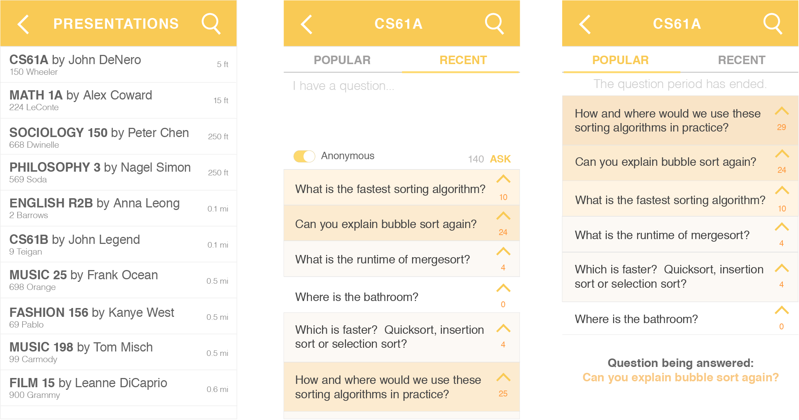

quak
Quak is a mobile Q&A app that gets the important questions answered through user-voted rankings and real-time updates.
Playing with After Effects prototyping. Screens linked in jQuery.
The Problem
Asking questions during lecture, or any presentation, can be an arduous process for many reasons: we have to hold onto our questions and keep them in our heads until the presenter is ready to answer them, the presenter spends too much time answering "dumb" questions when there are better questions to be asked, or sometimes we simply don't feel like speaking up in front of a large crowd.
"I don't want to speak up in front of the entire class."
"Sometimes I don't even hear the question so I just zone out when the professor is going over the answer."
"I forget what I was going to ask."
The Features
- Real-time question submissions
- Upvote questions that you like
- Choose to remain anonymous
- Ranking of questions by popularity to establish priorities
- Color ranges of questions for easy scanning
- Ability to save questions in electronic notes
- See what question is currently being answered
Brainstorm

Mockups
